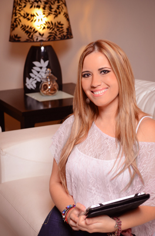
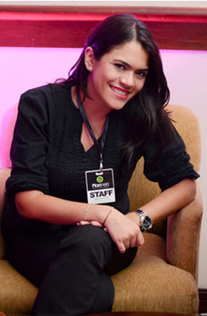

Nosotros
Somos gente feliz con una gran pasión: hacerte feliz.
Kika Uribe Altamirano:
Wedding Planner & Event Designer
Directora General
Profesional en Diseño, Publicidad y Gastronomía internacional. Con Mas de 10 años de experiencia en Diseño, Producción, Coordinación y logística de Bodas y eventos a nivel nacional.
Creadora y directora de campañas creativas, lanzamientos de productos y eventos BTL para importantes empresas internacionales.
Actualmente en PLANNERS Wedding & Events, Kika es la encargada del Diseño y coordinación total, el manejo del timeline y el desarrollo del protocolo.

Poly Uribe Rueda
Event Planner / Productora General
Profesional en Ciencias empresariales y Marketing Diseñadora de Joyas y accesorios, Experta en gestión de logística para eventos. Estuvo a cargo de varias marcas importantes en diferentes empresas y se especiali- zo en la relación con medios de comunicación.
Actualmente en PLANNERS Wedding & Events, Poly es la encargada de la producción y la supervisión de las Bodas y eventos. Responsable de que todas las ideas sean ejecutadas a tiempo y con la calidad exigida.